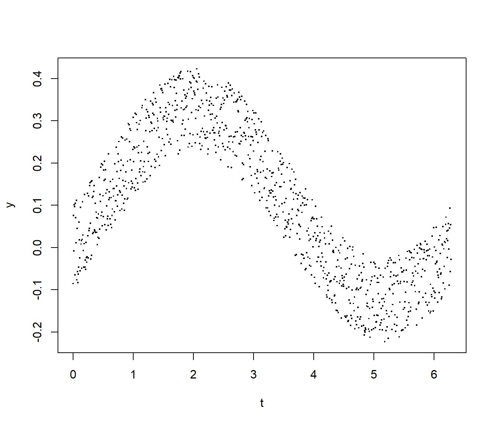
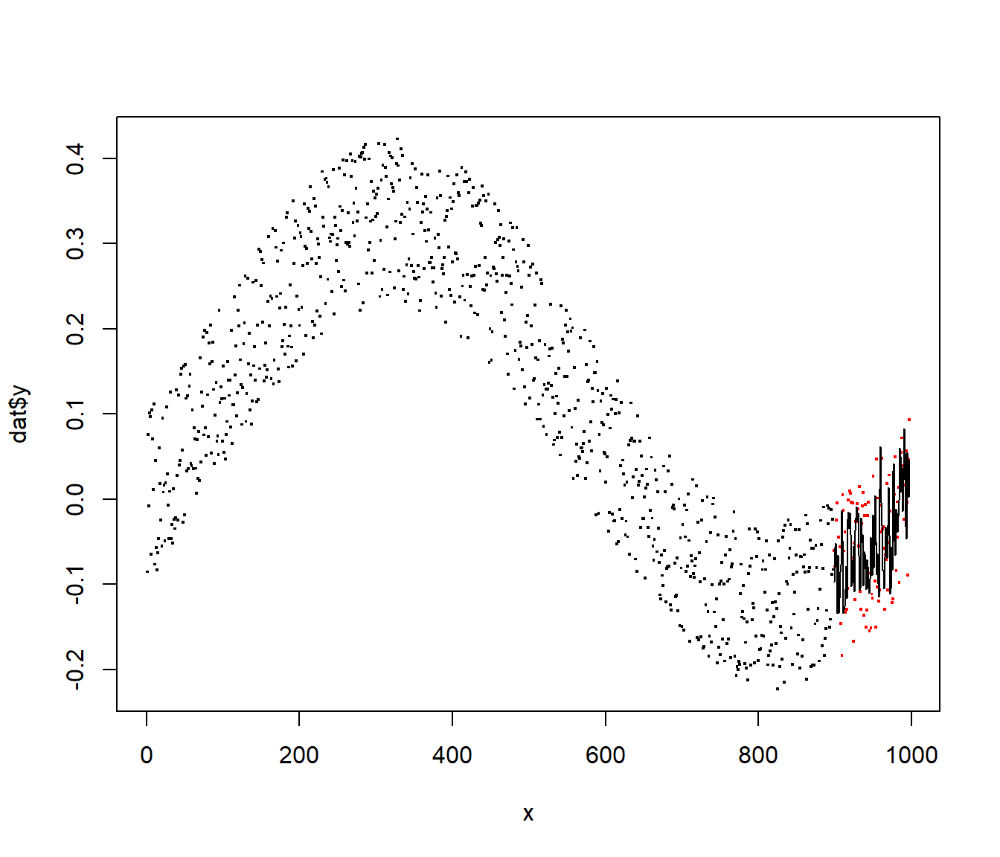

splitTools is a fast, lightweight toolkit for data splitting.
Its two main functions partition and create_folds support
data partitioning (e.g. into training, validation and test),
creating folds for cross-validation,
creating repeated folds for cross-validation,
stratified splitting (e.g. for stratified cross-validation),
grouped splitting (e.g. for group-k-fold cross-validation) as well as
blocked splitting (if the sequential order of the data should be retained).
The function create_timefolds does time-series splitting where the out-of-sample data follows the (growing) in-sample data.
We will now illustrate how to use splitTools in a typical modelling workflow.
We will go through the following three steps:
Split the data set iris into 60% training data, 20% validation and 20% test, stratified by the variable Sepal.Length. Since it is numeric, stratification is done internally by quantile binning.
We then tune the parameter mtry of a random forest to predict Sepal.Length as good as possible by the other variables. We do this on the validation data.
After selecting the best mtry, we challenge the final model on the remaining test data set.
library(splitTools)
library(ranger)
# Split data into partitions
set.seed(3451)
inds <- partition(iris$Sepal.Length, p = c(train = 0.6, valid = 0.2, test = 0.2))
str(inds)
#> List of 3
#> $ train: int [1:81] 2 3 6 7 8 10 11 18 19 20 ...
#> $ valid: int [1:34] 1 12 14 15 27 34 36 38 42 48 ...
#> $ test : int [1:35] 4 5 9 13 16 17 25 39 41 45 ...
train <- iris[inds$train, ]
valid <- iris[inds$valid, ]
test <- iris[inds$test, ]
# Root-mean-squared error function used to evaluate results
rmse <- function(y, pred) {
sqrt(mean((y - pred)^2))
}
# Tune mtry on validation data
valid_mtry <- numeric(ncol(train) - 1)
for (i in seq_along(valid_mtry)) {
fit <- ranger(Sepal.Length ~ ., data = train, mtry = i)
valid_mtry[i] <- rmse(valid$Sepal.Length, predict(fit, valid)$predictions)
}
valid_mtry
#> [1] 0.3809234 0.3242173 0.3208119 0.3241518
(best_mtry <- which.min(valid_mtry))
#> [1] 3
# Fit and test final model
final_fit <- ranger(Sepal.Length ~ ., data = train, mtry = best_mtry)
rmse(test$Sepal.Length, predict(final_fit, test)$predictions)
#> [1] 0.3480947Since our data set consists of only 150 rows, investing 20% of observations for validation is neither robust nor data efficient. Let’s modify the modelling strategy by replacing simple validation by five-fold cross-validation, again using stratification on the response variable.
Split the data set iris into 80% training data and 20% test, stratified by the variable Sepal.Length.
Use stratified five-fold cross-validation to tune the parameter mtry. We do this on the validation data.
After selecting the best mtry by this simple “GridSearchCV”, we challenge the final model on the test data set.
# Split into training and test
inds <- partition(iris$Sepal.Length, p = c(train = 0.8, test = 0.2))
train <- iris[inds$train, ]
test <- iris[inds$test, ]
# Get stratified cross-validation fold indices
folds <- create_folds(train$Sepal.Length, k = 5)
# Tune mtry by GridSearchCV
valid_mtry <- numeric(ncol(train) - 1)
for (i in seq_along(valid_mtry)) {
cv_mtry <- numeric()
for (fold in folds) {
fit <- ranger(Sepal.Length ~ ., data = train[fold, ], mtry = i)
cv_mtry <- c(cv_mtry,
rmse(train[-fold, "Sepal.Length"], predict(fit, train[-fold, ])$predictions))
}
valid_mtry[i] <- mean(cv_mtry)
}
# Result of cross-validation
valid_mtry
#> [1] 0.3870915 0.3460605 0.3337763 0.3302831
(best_mtry <- which.min(valid_mtry))
#> [1] 4
# Use optimal mtry to make model
final_fit <- ranger(Sepal.Length ~ ., data = train, mtry = best_mtry)
rmse(test$Sepal.Length, predict(final_fit, test)$predictions)
#> [1] 0.2970876If feasible, repeated cross-validation is recommended in order to reduce uncertainty in decisions. The process is the same as above. Instead of getting five performance values per fold, we get five times the number of repetitions (here, three).
# We start by making repeated, stratified cross-validation folds
folds <- create_folds(train$Sepal.Length, k = 5, m_rep = 3)
length(folds)
#> [1] 15
for (i in seq_along(valid_mtry)) {
cv_mtry <- numeric()
for (fold in folds) {
fit <- ranger(Sepal.Length ~ ., data = train[fold, ], mtry = i)
cv_mtry <- c(cv_mtry,
rmse(train[-fold, "Sepal.Length"], predict(fit, train[-fold, ])$predictions))
}
valid_mtry[i] <- mean(cv_mtry)
}
# Result of cross-validation
valid_mtry
#> [1] 0.3934294 0.3544207 0.3422013 0.3393454
(best_mtry <- which.min(valid_mtry))
#> [1] 4
# Use optimal mtry to make model
final_fit <- ranger(Sepal.Length ~ ., data = train, mtry = best_mtry)
rmse(test$Sepal.Length, predict(final_fit, test)$predictions)
#> [1] 0.2937055When modelling time series, usual cross-validation destroys the sequential nature of the data. This can be avoided by the following modification of k-fold cross-validation:
The data is first split into \(k+1\) blocks \(B_1, ..., B_{k+1}\), in sequential order. The following data sets are used in cross-validation:
First fold: \(B_1\) is used for training, \(B_2\) for evaluation.
Second fold: \(\{B_1, B_2\}\) is used for training, \(B_3\) for evaluation.
…
\(k\)-th fold: \(\{B_1, ..., B_k\}\) is used for training, \(B_{k+1}\) for evaluation.
This schema makes sure that the evaluation data set always follows the training data. Note that the training data grows over the whole process linearly.
In order to have a final evaluation of the optimized model, typically an initial blocked split into sequential training and testing data is done.
We first create a time series and derive lagged features for training. Then, again, we optimize mtry of a random forest by time-series cross-validation. We evaluate the optimized model on the last 10% of the time series.
# Create data
set.seed(452)
n <- 1000
t <- seq(0, 2 * pi, length.out = n)
y <- 0.2 * sin(t) - 0.1 * cos(t) + 0.2 * runif(n)
plot(y ~ t, pch = ".", cex = 2)
# Helper function
Lag <- function(z, k = 1) {
c(z[-seq_len(k)], rep(NA, k))
}
Lag(1:4, k = 1)
#> [1] 2 3 4 NA
# Add lagged features
dat <- data.frame(y,
lag1 = Lag(y),
lag2 = Lag(y, k = 2),
lag3 = Lag(y, k = 3))
dat <- dat[complete.cases(dat), ]
head(dat)
#> y lag1 lag2 lag3
#> 1 -0.085447174 0.075314649 -0.007841658 0.10081516
#> 2 0.075314649 -0.007841658 0.100815165 0.09635395
#> 3 -0.007841658 0.100815165 0.096353945 -0.06476294
#> 4 0.100815165 0.096353945 -0.064762935 0.10474890
#> 5 0.096353945 -0.064762935 0.104748904 0.07030228
#> 6 -0.064762935 0.104748904 0.070302283 0.01085425
cor(dat)
#> y lag1 lag2 lag3
#> y 1.0000000 0.8789100 0.8858208 0.8840929
#> lag1 0.8789100 1.0000000 0.8791226 0.8858995
#> lag2 0.8858208 0.8791226 1.0000000 0.8791388
#> lag3 0.8840929 0.8858995 0.8791388 1.0000000
# Block partitioning
inds <- partition(dat$y, p = c(train = 0.9, test = 0.1), type = "blocked")
str(inds)
#> List of 2
#> $ train: int [1:898] 1 2 3 4 5 6 7 8 9 10 ...
#> $ test : int [1:99] 899 900 901 902 903 904 905 906 907 908 ...
train <- dat[inds$train, ]
test <- dat[inds$test, ]
# Get time series folds
folds <- create_timefolds(train$y, k = 5)
str(folds)
#> List of 5
#> $ Fold1:List of 2
#> ..$ insample : int [1:150] 1 2 3 4 5 6 7 8 9 10 ...
#> ..$ outsample: int [1:150] 151 152 153 154 155 156 157 158 159 160 ...
#> $ Fold2:List of 2
#> ..$ insample : int [1:300] 1 2 3 4 5 6 7 8 9 10 ...
#> ..$ outsample: int [1:150] 301 302 303 304 305 306 307 308 309 310 ...
#> $ Fold3:List of 2
#> ..$ insample : int [1:450] 1 2 3 4 5 6 7 8 9 10 ...
#> ..$ outsample: int [1:150] 451 452 453 454 455 456 457 458 459 460 ...
#> $ Fold4:List of 2
#> ..$ insample : int [1:600] 1 2 3 4 5 6 7 8 9 10 ...
#> ..$ outsample: int [1:150] 601 602 603 604 605 606 607 608 609 610 ...
#> $ Fold5:List of 2
#> ..$ insample : int [1:750] 1 2 3 4 5 6 7 8 9 10 ...
#> ..$ outsample: int [1:148] 751 752 753 754 755 756 757 758 759 760 ...
# Tune mtry by GridSearchCV
valid_mtry <- numeric(ncol(train) - 1)
for (i in seq_along(valid_mtry)) {
cv_mtry <- numeric()
for (fold in folds) {
fit <- ranger(y ~ ., data = train[fold$insample, ], mtry = i)
cv_mtry <- c(cv_mtry,
rmse(train[fold$outsample, "y"],
predict(fit, train[fold$outsample, ])$predictions))
}
valid_mtry[i] <- mean(cv_mtry)
}
# Result of cross-validation
valid_mtry
#> [1] 0.08227426 0.08188822 0.08230784
(best_mtry <- which.min(valid_mtry))
#> [1] 2
# Use optimal mtry to make model and evaluate on future test data
final_fit <- ranger(y ~ ., data = train, mtry = best_mtry)
test_pred <- predict(final_fit, test)$predictions
rmse(test$y, test_pred)
#> [1] 0.07184702
# Plot
x <- seq_along(dat$y)
plot(x, dat$y, pch = ".", cex = 2)
points(tail(x, length(test$y)), test$y, col = "red", pch = ".", cex = 2)
lines(tail(x, length(test$y)), test_pred)